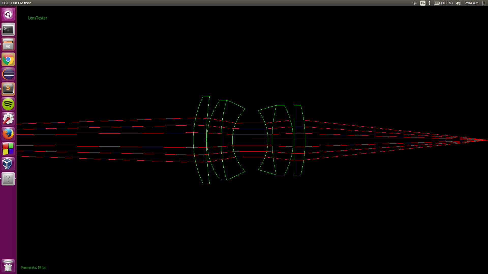
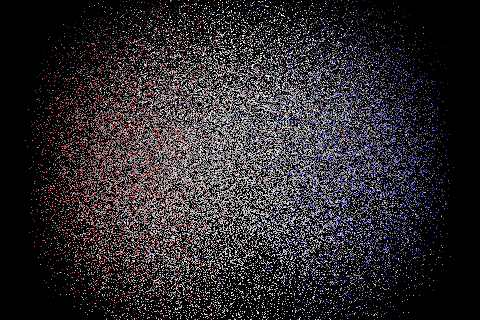

For this assignment I implemented additional functions to ray tracing. Unlike regular ray tracing where a ray is traced through a pinhole into the world, this traces a ray through different type of lenses first. The main idea of how tracing through a lens has to do with the index of refraction of a lens, snell's law, and lots of vector math.
Part 1: Ray Generation and Intersection
Description:The basic idea of the first part is to simulate real lenses. Unlike just looking through a pin hole, real lenses have the ability to distort pictures, change focus, allow people to create a much more engaging image. Thus instead of tracing the simulated world through a pin hole, this helped traces into the world with simulated lenses. This allow for a more realistic computer rendered images, since it mimics real lenses.
task 1 (tracing): using the basic ideas of last assignment, instead of tracing directly into the world, I traced through lenses first. Since lenses are a part of a sphere, we can use sphere intersection (explained in assignment 3) to find if our casted intersects a lens. However, unlike a sphere lenses are only a part of a sphere. Thus an additional attribute, aparture, is used to indicate how big the lens is. Thus to check for intersection, first we check if it intersects with the sphere that makes up the lens. Since we are tracing a ray through camera, where camera is placed at the origin looking into the -z-axis, thus all of our lenses are aligned along z-axis. Thus after checking for the sphere interection, we can project the ray and our lens' aperture onto the z = 0 plane, and check that the (x, y) distance of the ray is within the aperture of the lens, if so then it does intersects that lens. One thing to note is that we have both concave and convex lenses. Thus the radius of the lens, when pointing from the center of the circle into the world has a negative z-position. Which forms a concave lens looking from th camera. Thus for this case we know that our ray is traveling from inside the lens, so instead of choosing the first intersection, min_t, we would choose the second intersection, max_t, since we are approaching from the inside. However, if the z-position is positive, then we would keep the first intersection since the camera is outside the circle that makes up the lens. Lastly is the case where the lens is not made from a part of a circle, but it's from a plane. This lens is indicated by a radius of 0 (not a circle duh), for this case I just used axis aligned plane intersection and checks if it is within the aparture of the lens.
The second part is implementing the refract function, which tells how the lens affects the ray direction. Once again using the same concept of refraction from previous assignment, Snell's Law, to implement this. The difference here is that we are not working with 1 object, so we have to interchange our ray between object perspective when refracting with a lens, and the world perspective, when traveling from one lens to another. Thus before calculating inward ray to refract, we must change our ray into object perspective, and when finishing our calculation we must change it back to world perspective. Additionally, after refracting we must change our ray so that it reflects the correct ray that was refracted by the lens. So the origin of our ray will now be the intersection of our old ray with the lens, hit_p, because that's where the our going ray will starts at. The direction of our ray will be the outward vector that is returned by snell's law normalized.
To combine both refract and intersect functions together for a lens, we used pass_through function, which takes in a ray. Pass_through first checks if the ray intersect with its lens, if it doesn't the it returns false indicating that the ray didn't pass through the lens. If it itersects with the lens, it checks with refraction for total internal reflection. If the ray is refracted it would be altered by the refraction function described above. Then pass_through would returns true indicating that the ray has passes through.
lastly is the trace functions which takes in a ray. The first trace function, tracing through the lense forward, is straight forward. We simply iterate over all the lenses, starting with the one closest to the camera checks if our ray pass through and altered by all the lenses. One thing to note here is that since refract takes in ior, index of refraction, and previous ior, ior where the ray is coming from. Thus when the ray is starting out it's in a vacuum, thus start out ior is 1.0. As the ray passes through each lens this ior would be changed to the lens' ior. The second function is tracing backward which is a bit tricker. The starting ior would not be 1.0 isntead it is, the ior of the lens furthest from the camera. Since we are tracing backward, we iterate through our lenses in a backward manner. To do this we start with index i, which is the size of the list of lenses - 1, then go to 0. We then call pass through on each lens, however the previous ior, would be the ior from the lens closer to the camera thus it is indexed at i - 1. Unless it is the last lens, then the previous ior would simply be 1.0 since the ior after that is just a vacuum.
debug: one bug I had was that I didnot add to the vector * trace all the hit points, thus when using lenstester my rays were not refracted. Addtionally, I was messing up with the signs of the normal in refract function. Thus my there were some reflection in my refract function. To fix this I realized that we want the normal and the incoming ray to be on the opposite side of each other. Thus whenever we have a cosine of incoming ray and the normal of the lens greater than 0 this shows that they are on the same side, thus I negated the normal. Last bug is that I was not returning true when a planar lens if detected in the refract function, so the ray that goes straight down the middle was cut short.
|

Results Caption: this shows how the middle ray was cut short, because refract function didnot detect planar lenses.
|
|
Results Caption: didnot take into account for backward incoming rays for refract function, thus I didnot swap the normals, leading to reflections
|
task 2 (Lens/Camera helper functions): The first function that was implemented was set_focus_params which calculates infinity focus, or the point on the z-axis where the sensor will be in focus for objects far away, focal_length, the boundary for the camera for at least some of the world would be in focus, and near_focus which is the point where near objects would be in focus if the sensor was placed there. To calculate infinite focus we casted a ray parallel to the z-axis shooting into the lens. This ray would be offset by some distance from the z-axis so that it would shoot straight into the lens (because lenses are centered along z-axis so the normal of those lenses would just let the ray pass, thus we need an offset). We can offset this ray by shifting it in the x direction by some constant and trace that ray, if the ray doesn't pass_through the lenses we know that our offset is too big and decrease it by half until it pass through the lenses. As we trace this ray once it gets out of the lenses it would be refracted at an angle. Since we know the focal point is on the z-axis, we can calculate the focal point by finding the intersection of the ray and the z-axis. Since y is always 0, we can project the z-axis and the ray onto the x = 0 plane, and calculate for the intersection of the ray and the axis using axis aligned intersection. This would give our infinite_focus since if we trace the ray backward the focal point would focus on all the objects from infinity because the ray origninated from there. Next is the focal length, which is simply infinite focus subtract the apparent refraction of the above ray. The reason for this is because the furthest focus point from the camera would be infinite focus point. To calculate near focus point, we have an extimated starting point, 5 times the focal length away from the infite focus point. Once again we can shoot this ray straight from the center because it will not provide any good information, and we can't offset it by a distance from the z-axis because the object focus is on the z-axis. Thus we shoots this ray starting at the estimated z location, on the z-axis, at a slight angle. If this ray doesn't successfully pass through the lenses we would decrease the angle. Similar to infinite focus point, we look for the point where the ray intersects with the z-xis which will give us near focus point. These parameters gives us the range of focus for this lenses.
The second function if focus depth, which is given a depth find the conjugate focal point in the real world. To do this we simply start on the z-axis at position depth d, so position [0, 0 , d]. Follow similar concept as infinite focus and near focus, we trace that ray through the lens at an angle. We then intersects it with the z-axis, and the intersection would indicates the conjugate focal point for that depth.
The next function is back lens sample, which generates a uniforml distributed random sample on the lens that is closest to the sensor. To do this we extract the radius of the sample space, which is the aparture of the last lens divided by 2. We then generate a random sample in [0, 1] for the x direction, scale that by the diameter of the sample space. Since our lens in centered on (0, 0) for (x,y) if we shift our sample by - radius, this would give us a random sample from -radius to radius in the x-direction. Similarly I generated the same sample for the y-direction. this would then give us sample inside a square with edge equals to the diameter, centered at 0,0. However, lenses are circular, thus I used rejection sampling. The idea is that if the sample is outside of the circle, its distance is greater than radius from the center then we ignore that sample.
The last function is generate ray which takes in (x, y) position, which creates a ray from the sensor plate at that (x, y) position, into the lenses, and out to the world. To do this we first unnormalize (x, y) by scaling it with the width and height of our sensor, and the create z position by looking at the depth of our sensor. This would give us the starting point of our ray. To get the direction of our ray we would randomly generate a sample on the back lens, since anything outside of that would not make it through the lenses. Then we cast our ray from starting point onto that sample. By giving its direction to be sample's position subtract starting position. We then trace that ray into the lenses, if it makes it through the lense we would change its perspective from camera perspective to world perspective through matrix multiplication, with camera2world matrix. If the ray doesn't pass through the lenses, then we can change its direction to be [0, 0, 1] which shoots straight back to the sensor plate, because we are looking into the [0, 0, -1] direction.
Debug: One bug that I had was when calculating infinite focus, at time the ray would not make it through the lens because the offset distance is too great. To fix this I added a while loop to decrease the offset distance until I was able to generate a ray that works. Another bug is that when sampling the back lens, I was sampling between [0, 1] and multiply that by radius, and reject accordingly, thus I was only sampling between [0, radius] for both x and y. To fix this I scaled my sample by the diameter and shifted by -radius, and reject accordingly. Last bug I had was in generating ray, when I generated a ray I did not normalize its direction. Lastly is that I forgot to terminate the rays when it did not successfully passes through the lenses, thus a lot of my samples were black.
|
Results Caption: This bug shows how I was sampling within [0, radius] for both x and y direction. Notice that the samples are only on the left bottom corner of the screen showing how I was only sampling at that spot
|
|

Results Caption: This bug was due to the fact that I didnot normalize my direction vector, thus all my intersections were scaled incorrectly leading to spaced out samples.
|
|
Results Caption: This bug shows how I was not terminating rays that didn't make it through the lenses, thus leading to a lot of black, since the samples I did not get rid of samples that didn't make it through the lenses.
|
|
Results Caption: The result when tracing rays through the first camera at specific focal point.
|
|
Results Caption: The result when tracing rays through the second camera at specific focal point.
|
|
Results Caption: The result when tracing rays through the third camera at specific focal point.
|
|
Results Caption: The result when tracing rays through the forth camera at specific focal point.
|
|
Results Caption: The result when tracing rays backward, from the world into the lenses and into a focal point.
|
Focal Parameters for four given cameras
Camera | infinite focus | near focus | focal length
dgauss | 51.2453 | 64.7173 | 50.2712
wid-angle | 28.6123 | 38.5373 | 21.7229
telephoto | 188.728 | 240.888 | 249.51
fisheye | 28.5823 | 42.5895 | 9.91023
Graphs show sensor depth vs its conjugate focal point
|
Results Caption: sensor depth to focal point for camera 1. Note that since we are looking negative z direction, thus the smaller the number the further away it is. Thus left side of the graph is infinite focus, as we approach right side it gets to near focus. Also for betting viewing purposes, I deleted the most left point since it corresponded with too extreme value making a zoomed out graph.
|
|
Results Caption: sensor depth to focal point for camera 2. Note that since we are looking negative z direction, thus the smaller the number the further away it is. Thus left side of the graph is infinite focus, as we approach right side it gets to near focus. Also for betting viewing purposes, I deleted the most left point since it corresponded with too extreme value making a zoomed out graph.
|
|
Results Caption: sensor depth to focal point for camera 3. Note that since we are looking negative z direction, thus the smaller the number the further away it is. Thus left side of the graph is infinite focus, as we approach right side it gets to near focus. Also for betting viewing purposes, I deleted the most left point since it corresponded with too extreme value making a zoomed out graph.
|
|
Results Caption: sensor depth to focal point for camera 4. Note that since we are looking negative z direction, thus the smaller the number the further away it is. Thus left side of the graph is infinite focus, as we approach right side it gets to near focus. Also for betting viewing purposes, I deleted the most left point since it corresponded with too extreme value making a zoomed out graph.
|
Images Rendered with new found power
|
Results Caption: spheres image using camera to rendered. notice the focus on both spheres. While the closer sphere is in focus, the further sphere is our of focus. This shows how lenses are being used to create different effects, instead of rendering through a pinhole. This image was rendered with 1024 samples per pixel, under 1 spot light, and 100 ray bounces.
|
|
Results Caption: rendered image of dragon, however it was out of focus and took too long to re-render, but it shows how out of focus works with the circles of lights on the dragon. Also the edges on the back is in focus. This image was rendered with 1024 samples per pixel, under 1 spot light, and 100 ray bounces.
|
Part 2: Contrast-based autofocus
Description:
task 1 (simple metric): this part I implemented a function that calculates the heuristic for how focused an image is. The high level idea is that a sharper images will have more sharp edges indicating that it is in focus. While out of focus images are blurred. Using this we can calculate for our focus heuristic of an image is by calculating the variance of its pixels. Since all pixels are made with red, green and blue, I calculated the variance for each channel and divide that by three. To do this first I calculated the average of each channel, by stepping over imagebuffer adding the value of each pixel, then divide each total by the size of the imagebuffer. Then to calculate the variance of each channel I once again stepped over the imagebuffer. For each pixel I extract its value subtract by the average and take the square of that. I then add all of those values and divide it by the imagebuffer size once again. I did this for all three channels. The formula is as follow:
var = sum[(x_i - avg)^2 for all x_i where x_i = pixel value at ith index)]/(total imagebuffer size)
metric = (var_green + var_red + var_blue)/3
task 2 (autofocus): This part implements a function that finds the depth for the sensor, at which the scene is in focus. To this I started at the depth infinite focus, calculated in part 1, and step over a value. For each depth I trace called the trace function into the scene to get an imagebuffer, use that image to calculate a heuristic by using the function made in part 2 task 1. Since the highest heuristic indicates more focus image, I simply step over all the depth, until near focus, the last focal step, then find a depth that has the highest heuristic. This depth would now be in focus. Thus now instead of manually focus things, this function can auto focus an image.
debug:There weren't any major bugs, however one thing I noticed was that the autofocus algorithm that uses this kind of heuristic requires sharp edges. Thus when rendering places that do not have sharp edges such as shadow, or if an object has too close if an object's value is too close to the background then it fails to detect a good autofocus depth.
Statistics for autofocus with different depths
|
Results Caption: This graphs shows the heuristic for autofocus (variance). The higher the heuristic the more focus the image is. Each point is a tested sensor depth that was tested, and the highest point is the chosen depth for autofocus. In this case the best depth was 55.745313 with the heuristic of 6684.814113
|
|
Results Caption: Corresponding image that was rendered with the depth chosen from the above graph.
|
Images Rendered with autofocus, with different lenses, and different angles
|
Results Caption: image rendered with camera 1 at angle. It was rendered with 1024 samples per pixel, 1 spot light, and 100 bounce per ray, autofocus was also used. This is a simple camera that allow us to set focus at certain depth.
|
 Results Caption: image rendered with camera 2 at an angle. It was rendered with 1024 samples per pixel, 1 spot light, and 100 bounce per ray, autofocus was also used. This camera enlarges closer object to us.
Results Caption: image rendered with camera 2 at an angle. It was rendered with 1024 samples per pixel, 1 spot light, and 100 bounce per ray, autofocus was also used. This camera enlarges closer object to us.
|
|
Results Caption: image rendered with camera 3 at an angle. It was rendered with 1024 samples per pixel, 1 spot light, and 100 bounce per ray, autofocus was also used. This camera has very far focus points and depth, thus leading to a box like as well as flatter image. Notice that we lost the depth between the ball in this image.
|
|
Results Caption: image rendered with camera 4 at an angle. It was rendered with 1024 samples per pixel, 1 spot light, and 100 bounce per ray, autofocus was also used. This camera is known as the fisheye, distorting the image in a circular way.
|